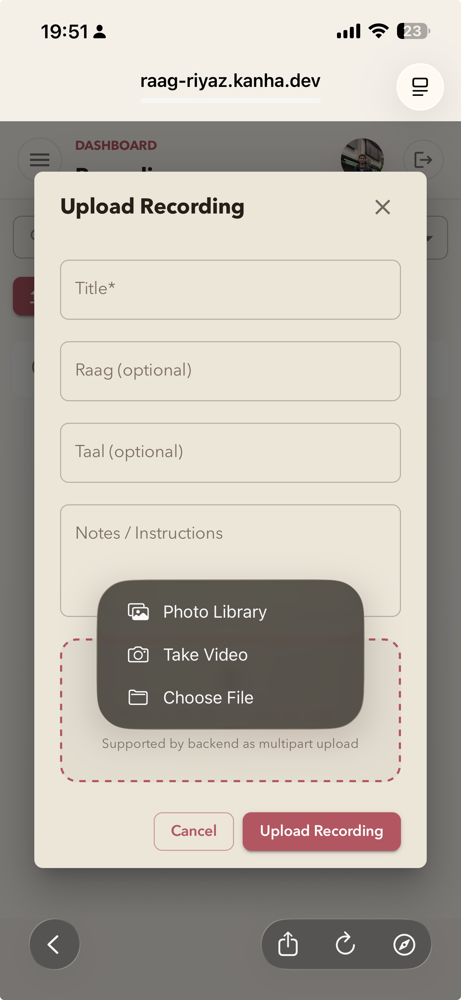
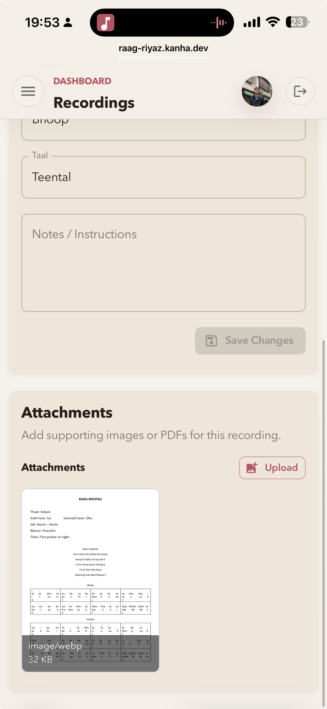
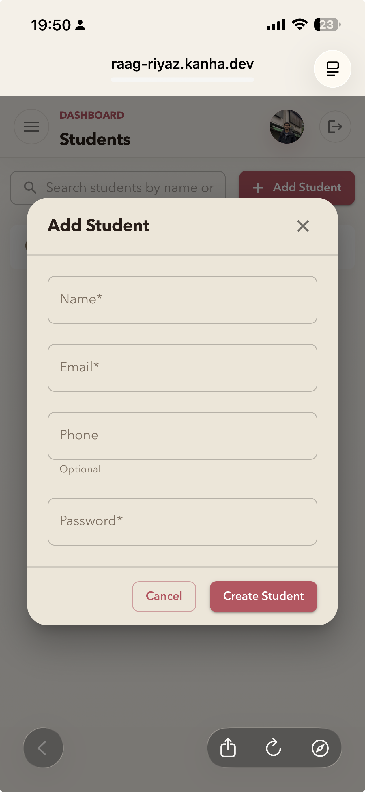
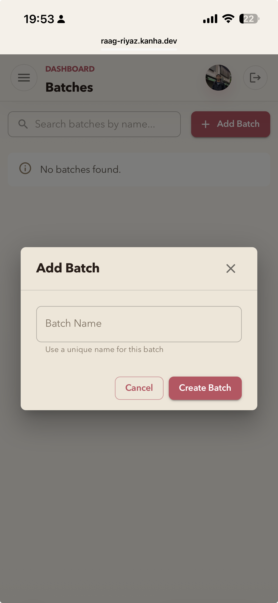
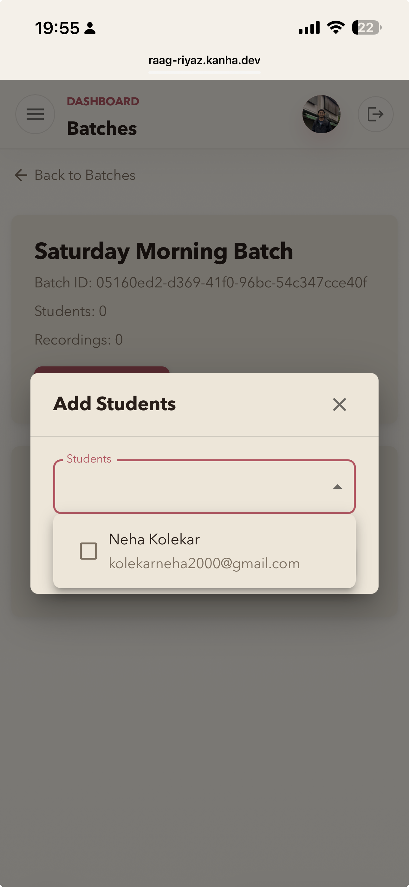
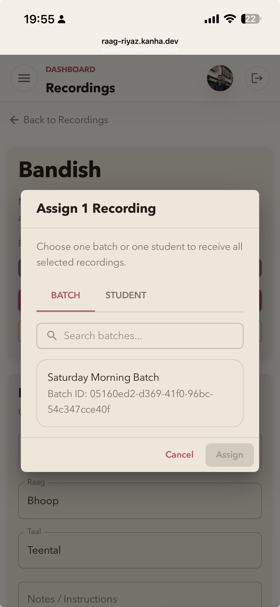
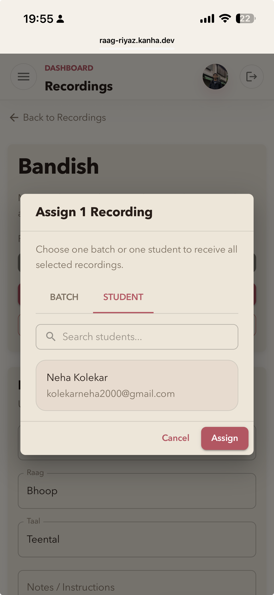
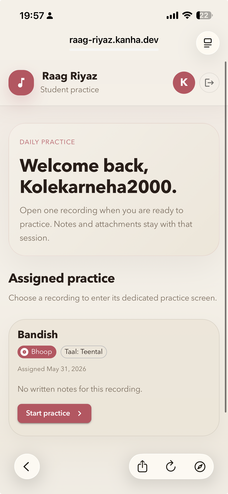
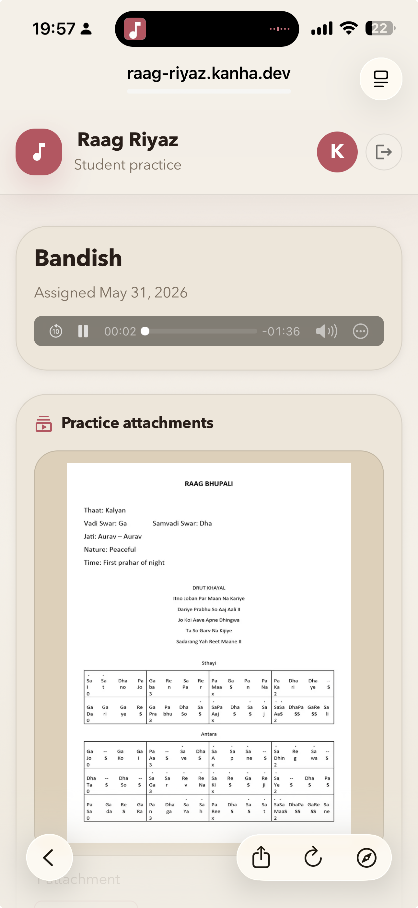

Context stays attached
Notes, images, and PDFs remain linked to the recording instead of drifting into separate folders.
Raag Riyaz
Raag Riyaz helps teachers organize practice recordings with notes and attachments, manage students and batches, assign recordings to the right learners, and give students a focused place to practice.
Why teachers choose it
Practice can get scattered across chat threads, voice notes, files, and reminders. Raag Riyaz gathers the entire practice loop into a single system: create the recording, attach context, organize the learner, and deliver the assignment.
Notes, images, and PDFs remain linked to the recording instead of drifting into separate folders.
Teach one student or a whole batch without duplicating work or losing track of where it belongs.
The student view stays focused on current practice, making it easier to act on the teacher's guidance.
Recording library
Each recording can carry the full teaching context: title, raag, taal, notes, and supporting files. That means a teacher can build a reusable library instead of uploading anonymous audio clips.


Students and batches
Teachers can create student profiles directly inside Raag Riyaz and group them into batches for classes, levels, timings, or courses. The structure stays clean, and assignments become faster to manage.



Assignments
Raag Riyaz supports precise delivery. A teacher can assign a recording to a single student for targeted practice after class, or send it to a batch when everyone needs the same material.


Student experience
Students open a clean dashboard with the recordings assigned to them directly or through their batches. Each practice screen keeps the audio, teacher note, and attachments together so the next step is always obvious.


Outcomes
Record once, organize once, and reuse that practice across students or batches whenever needed.
Teachers keep track of students, batches, and assignments without juggling separate tools.
Students always see the exact recording, notes, and references they need for the next session.